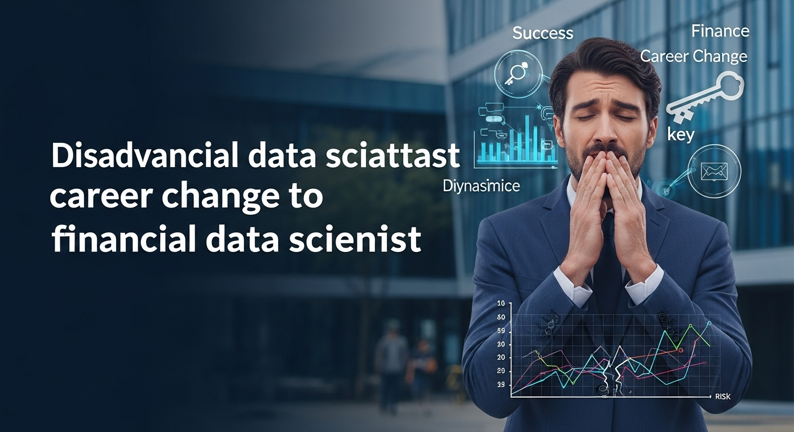

データサイエンスで金融業界へ転職！成功の鍵とキャリアパスを徹底解説
導入
こんにちは。データサイエンスのスキルを活かして、次のキャリアステージをお考えのあなたへ。もしあなたが、自身の持つ分析力やモデリング技術を、よりダイナミックで社会に大きなインパクトを与える分野で試してみたいと感じているなら、「金融業界」という選択肢は非常に魅力的かもしれません。
「金融業界」と聞くと、どのようなイメージを思い浮かべるでしょうか。堅実で伝統的、少しお堅いイメージがあるかもしれません。一方で、私たちの生活や経済活動に決して欠かすことのできない、社会の根幹を支える重要なインフラであることも事実です。そして今、この伝統的な業界が、大きな変革の波に乗り、かつてないほど「データサイエンス」の力を求めているのです。
スマートフォンのアプリ一つで誰もが手軽に投資を始められる時代。AIが個人の資産状況に合わせて最適な運用プランを提案してくれるサービス。日々の膨大な取引データから不正を瞬時に検知するシステム。これらはすべて、データサイエンスの技術が金融の世界にもたらした革新の一例に過ぎません。
FinTechと呼ばれる新しいテクノロジー企業の台頭により、金融業界の競争は激化しています。伝統的な金融機関も、生き残りをかけてデジタルトランスフォーメーション（DX）を加速させており、その中心的な役割を担うのが、まさにデータサイエンティストなのです。
この記事では、データサイエンスのスキルを武器に金融業界への転職を目指す方々に向けて、その成功の鍵となる情報を網羅的に、そして丁寧に解説していきます。
- なぜ今、金融業界でデータサイエンスがこれほどまでに注目されているのか？
- 金融データサイエンティストは、具体的にどのような仕事をしているのか？
- 転職を成功させるためには、どのようなスキルや準備が必要なのか？
- このキャリアパスには、どのような魅力（メリット）と覚悟（デメリット）があるのか？
といった、あなたが抱えるであろう疑問や不安の一つひとつに、具体的で実践的な答えを提示していきます。
この記事は、単なる情報の羅列ではありません。あなたのキャリアにおける大切な一歩を、確かな自信と共に踏み出すための、心強いガイドブックとなることを目指しています。データという羅針盤を手に、金融という広大な海へ漕ぎ出すための準備を、ここから一緒に始めていきましょう。あなたの挑戦が、未来の金融を形作る大きな力となるかもしれません。
金融業界でデータサイエンスが注目される理由
なぜ、これほどまでに金融業界はデータサイエンティストを熱心に求めているのでしょうか。その背景には、業界が直面する構造的な変化と、データ活用がもたらす計り知れない可能性が深く関わっています。ここでは、その理由を二つの側面から詳しく見ていきましょう。
金融業界におけるデータ活用の重要性
金融業界は、古くから「データ」と共に歩んできた業界と言えます。顧客の口座情報、入出金履歴、株式や債券の取引価格、為替レートの変動など、その業務は常に膨大な量のデータと隣り合わせでした。しかし、近年のテクノロジーの進化は、そのデータの「量」「種類」「速度」を爆発的に増大させ、その活用の仕方を根本から変えようとしています。
1. データの爆発的な増加と多様化
従来、金融機関が扱ってきたデータは、主に勘定系システムに記録されるような、構造化された数値データが中心でした。しかし、インターネットバンキングやスマートフォンアプリの普及により、顧客のオンライン上での行動ログ、クリックストリーム、さらにはコールセンターでの音声データやSNSでの評判といった、非構造化データも大量に蓄積されるようになりました。これらの多様なデータを統合し、分析することで、これまで見えてこなかった顧客のニーズや行動パターンを深く理解することが可能になります。例えば、「どのようなタイミングで、どのような金融商品を検討し始めるのか」といったインサイトを得ることで、よりパーソナライズされたサービスの提供が実現できるのです。
2. FinTechの台頭と競争環境の激化
近年、テクノロジーを武器に新しい金融サービスを提供する「FinTech」企業が次々と登場し、決済、融資、資産運用といった様々な領域で、既存の金融機関のビジネスモデルを脅かしています。彼らの強みは、徹底したデータドリブンな意思決定と、顧客中心のUI/UX（ユーザーインターフェース/ユーザーエクスペリエンス）です。例えば、AIを活用した与信審査モデルによって、従来の審査では融資を受けられなかった層にも迅速に資金を提供したり、個人のリスク許容度に合わせて最適化されたポートフォリオを自動で構築するロボアドバイザーを提供したりしています。こうした新たな競争相手に対抗し、顧客の期待に応え続けるために、伝統的な金融機関もデータサイエンスの力を活用したサービスの高度化が急務となっているのです。
3. データ活用がもたらす具体的なビジネス価値
データサイエンスの活用は、金融機関に多岐にわたるメリットをもたらします。
- 収益機会の創出: 顧客の購買履歴や行動データを分析し、最適なタイミングで最適な金融商品を提案するクロスセルやアップセル。市場の動向を予測し、より精度の高い投資判断を行うアルゴリズムトレーディングなど、データは新たな収益の源泉となります。
- リスク管理の高度化: 過去の膨大なデータから貸し倒れのリスクを予測する信用スコアリングモデルの精緻化や、リアルタイムの取引データからクレジットカードの不正利用を検知するシステムの構築など、データサイエンスは金融機関の健全性を守る上で不可欠な役割を果たします。
- 顧客体験（CX）の向上: 顧客一人ひとりのニーズに合わせたパーソナライズされた情報提供や、AIチャットボットによる24時間365日の問い合わせ対応など、データ活用は顧客満足度を飛躍的に向上させ、長期的な顧客との関係構築（リレーションシップ）に貢献します。
- 業務効率化とコスト削減: 手作業で行っていた定型業務をRPA（Robotic Process Automation）やAI-OCR（光学的文字認識）で自動化したり、需要予測に基づいて人員配置を最適化したりすることで、大幅なコスト削減と生産性向上が期待できます。
このように、データ活用はもはや単なる「あれば良いもの」ではなく、金融機関が未来を生き抜くための「生命線」となっているのです。
金融データサイエンティストが果たす役割
こうした背景の中、金融データサイエンティストは、単にデータを分析する専門家にとどまらず、ビジネスの成長を牽引する戦略的なパートナーとして、極めて重要な役割を担います。
1. 経営の意思決定を支える「羅針盤」
金融機関の経営層は、日々、市場の不確実性の中で重要な意思決定を迫られています。金利の変動、競合他社の動向、新たな規制の導入など、考慮すべき要素は無数にあります。金融データサイエンティストは、客観的なデータ分析に基づき、これらの複雑な事象の背後にあるパターンや因果関係を解き明かし、将来を予測するモデルを構築します。例えば、「新たな支店を出店するならどの地域が最も収益性が高いか」「新しいキャンペーンはどの顧客層に最も響くか」といった問いに対して、勘や経験だけに頼るのではなく、データに基づいた合理的な根拠を提示することで、経営の意思決定の精度を格段に高めるのです。
2. 新たな価値を創造する「設計者」
データサイエンティストは、データの中に眠る新たなビジネスチャンスを発見し、それを具体的な商品やサービスとして形にする「設計者」でもあります。例えば、顧客の資産状況やライフステージの変化をデータから予測し、将来必要となるであろう保険やローン商品を先回りして提案する。あるいは、SNS上のテキストデータを分析して、市場のセンチメント（人々の感情や雰囲気）を数値化し、それを投資戦略に組み込む。このように、データからインサイトを抽出し、それをビジネスロジックに落とし込み、エンジニアと協力してシステムに実装するまでの一連のプロセスを主導する役割が期待されています。
3. 組織の健全性を守る「番人」
金融業界は、顧客の大切な資産を預かるという性質上、極めて高いレベルのセキュリティとコンプライアンス（法令遵守）が求められます。金融データサイエンティストは、その専門知識を活かして、組織を様々なリスクから守る「番人」としての役割も果たします。マネーロンダリング（資金洗浄）やサイバー攻撃といった不正な取引のパターンを機械学習モデルで検知し、未然に防ぐ。あるいは、社内に蓄積された膨大な文書データから、コンプライアンス違反に繋がりかねないリスクを早期に発見するなど、データサイエンスは金融機関の「守り」を固める上でも不可欠な技術となっています。
4. データドリブン文化を醸成する「伝道師」
多くの伝統的な金融機関では、依然として経験や勘に頼った意思決定が行われている部署も少なくありません。金融データサイエンティストには、データ分析の専門家としてだけでなく、組織全体にデータ活用の重要性やその価値を伝え、データに基づいて議論し、意思決定を行う「データドリブン文化」を根付かせていく「伝道師」としての役割も期待されます。分析結果を専門外の人にも分かりやすく伝え、データ活用の成功事例を積み重ねていくことで、組織全体のデータリテラシーを向上させ、変革を推進していくことが求められるのです。
このように、金融データサイエンティストは、攻守にわたって企業の成長と安定に貢献する、まさに現代の金融業界におけるキーパーソンと言えるでしょう。
金融データサイエンティストの仕事内容とキャリアパス
金融業界という広大なフィールドで、データサイエンティストは具体的にどのような業務に携わり、どのようなキャリアを築いていくのでしょうか。ここでは、そのリアルな仕事内容から、将来のキャリアパス、そして気になる年収の目安まで、詳しく掘り下げていきます。
具体的な業務内容：リスク管理から市場予測まで
金融データサイエンティストの仕事は、所属する企業（銀行、証券、保険、クレジットカードなど）や部署によって多岐にわたりますが、大きく分けると以下のようないくつかの領域に分類できます。これらの業務は、それぞれが独立しているわけではなく、互いに連携しながら金融機関全体の活動を支えています。
1. リスク管理
金融機関の根幹をなす、最も重要な業務の一つです。データサイエンスは、様々なリスクを定量的に評価し、コントロールするために活用されます。
- 信用リスク管理: 個人や企業に融資を行う際の「貸し倒れリスク」を予測する業務です。申込者の属性情報（年齢、年収、勤務先など）や過去の信用情報（クレジットヒストリー）を基に、機械学習モデル（ロジスティック回帰、勾配ブースティングなど）を用いて信用スコアを算出します。このスコアは、融資の可否判断や貸出金利の設定に利用されます。より精度の高いモデルを構築することで、貸し倒れ損失を最小限に抑えつつ、より多くの顧客に融資機会を提供することが可能になります。
- 市場リスク管理: 株価、金利、為替レートなどの市場変動によって、保有する資産の価値が下落するリスクを管理します。過去の市場データを用いて、将来の価格変動をシミュレーションし、VaR（Value at Risk）と呼ばれる「予想される最大損失額」を算出します。時系列分析やモンテカルロシミュレーションといった統計的手法が駆使されます。
- オペレーショナルリスク管理: システム障害、事務ミス、不正行為など、業務プロセスに起因するリスクを管理します。特に、クレジットカードの不正利用検知（Fraud Detection）はデータサイエンスの得意分野です。過去の膨大な取引データから、正常な取引とは異なるパターン（異常検知）をリアルタイムで検出し、不正な取引をブロックします。
2. マーケティング
顧客との関係を深め、収益を最大化するための戦略的な活動です。
- 顧客分析とセグメンテーション: 顧客の属性、取引履歴、Web行動ログなどを分析し、顧客を類似したグループに分類（セグメンテーション）します。例えば、「資産形成に関心が高い若年層」「退職金運用を考えているシニア層」といったセグメントごとに、最適なアプローチを考えます。
- LTV（顧客生涯価値）予測と解約予測: 顧客が将来にわたって企業にもたらす利益（LTV）を予測したり、逆にサービスを解約しそうな顧客（チャーン）を事前に予測したりします。解約の兆候が見られる顧客に対して、適切なタイミングでフォローアップの連絡を入れるなど、プロアクティブな顧客維持活動に繋げます。
- レコメンデーション: 顧客の過去の取引履歴や興味関心に基づいて、次におすすめの金融商品（投資信託、保険など）を提案するエンジンを開発します。これにより、顧客一人ひとりにパーソナライズされた体験を提供し、クロスセルを促進します。
3. トレーディング・資産運用
証券会社や資産運用会社における、まさに最前線の業務です。この分野は特に「クオンツ（Quantitative Analyst）」と呼ばれる、高度な数理・統計知識を持つ専門家が活躍する領域です。
- アルゴリズムトレーディング: コンピュータプログラムを用いて、高速かつ自動で金融商品の売買を行うシステムの開発です。市場の微細な価格変動やニュース速報などのテキストデータをリアルタイムで分析し、最適な売買タイミングを判断します。ミリ秒単位の判断が求められる、極めて高度な世界です。
- ポートフォリオ最適化: 複数の資産（株式、債券など）を組み合わせる際に、リスクを最小限に抑えながらリターンを最大化する最適な配分を計算します。現代ポートフォリオ理論などの金融工学の知識と、最適化アルゴリズムが活用されます。
- 市場予測とセンチメント分析: 経済指標や企業の決算情報、さらにはSNSやニュース記事といったオルタナティブデータ（非伝統的データ）を自然言語処理（NLP）技術で分析し、市場全体のセンチメント（雰囲気）や特定の銘柄の将来の株価を予測します。
4. 新規サービス開発・業務効率化
テクノロジーを活用して、新しい顧客体験を創造したり、社内の業務を効率化したりする役割です。
- AIチャットボットの開発: 顧客からの定型的な問い合わせに対して、24時間365日自動で応答するチャットボットを開発します。自然言語処理技術を用いて、顧客の質問の意図を正確に理解し、適切な回答を生成するモデルを構築します。
- AI-OCRによる書類処理の自動化: 申込書や本人確認書類などの紙の書類をスキャンし、そこに書かれた文字情報をAI-OCRで読み取り、自動でデータ化します。これにより、手入力にかかっていた膨大な時間とコストを削減できます。
- 音声認識によるコンプライアンスチェック: 営業担当者と顧客との会話を音声認識技術でテキスト化し、その内容に不適切な勧誘や説明不足がないかをAIが自動でチェックするシステムなどを開発します。
データアナリスト経験が金融業界で活かせるポイント
もしあなたが現在、IT企業や製造業などでデータアナリストとして活躍しているなら、その経験は金融業界への転職において非常に強力な武器となります。金融特有の知識は後からでも学べますが、データと向き合い、ビジネス課題を解決してきた経験そのものが、何よりの価値を持つのです。
- データハンドリング能力: どのような業界であれ、生データは不完全で整理されていないことがほとんどです。SQLやPython（pandas）を駆使して、巨大なデータの中から必要な情報を抽出し、欠損値や外れ値を処理し、分析しやすい形に整える（データクレンジング・前処理）スキルは、金融業界でも全く同じように求められます。むしろ、データの正確性が極めて重要な金融業界では、この基礎的なスキルがより高く評価される傾向にあります。
- 可視化とレポーティングスキル: 分析結果を単なる数字の羅列で終わらせず、TableauやPower BIといったツールを用いて、ビジネスサイドの人間が見て直感的に理解できるグラフやダッシュボードに落とし込む能力は、業界を問わず重要です。複雑な金融データを分かりやすく可視化し、インサイトを伝える力は、経営層の意思決定をサポートする上で不可欠です。
- 仮説構築・検証能力: 「なぜ、この商品の売上が伸びているのか？」「特定のユーザー層の離脱率が高い原因は何か？」といったビジネス上の問いに対して、データに基づいた仮説を立て、それを検証していく思考プロセスは、データアナリストの核となるスキルです。この課題解決のアプローチは、例えば「なぜ、特定の属性を持つ顧客の延滞率が高いのか？」といった金融の課題にもそのまま応用できます。
- 異業種での経験がもたらす新しい視点: 例えば、Eコマース業界で顧客の購買行動を分析してきた経験は、金融商品のクロスセル戦略を考える上で大いに役立ちます。また、WebサービスでA/Bテストを繰り返してUI/UXを改善してきた経験は、ネットバンキングのアプリ改善プロジェクトで活かせるでしょう。金融業界の常識にとらわれない、新しい視点やアイデアをもたらしてくれる人材は、変革を目指す金融機関にとって非常に貴重な存在です。
想定されるキャリアパスと年収例
金融データサイエンティストのキャリアパスは、多様な可能性に満ちています。一般的には、経験やスキルレベルに応じて、以下のようなステップでキャリアを築いていくことが多いでしょう。
1. キャリアパスの方向性
- ジュニアデータサイエンティスト（アナリスト）:
- 主にシニアメンバーの指導のもと、データ抽出、前処理、可視化、基本的な分析などを担当します。SQLやPythonの基礎を固め、金融ドメイン知識を吸収していく時期です。
- シニアデータサイエンティスト:
- 自身が主体となって、一つのプロジェクトを担当します。ビジネス課題の定義から、データ収集、モデル構築、評価、そしてビジネスサイドへの報告まで、一連のプロセスを自律的に遂行する能力が求められます。後輩の指導や育成にも関わることがあります。
- リードデータサイエンティスト / データサイエンスマネージャー:
- スペシャリストの道（リード）: 特定の領域（例：自然言語処理、時系列分析、金融工学など）で極めて高度な専門性を持ち、チームの技術的な課題解決をリードする役割です。最新の論文をキャッチアップし、それを自社の課題に応用するような、研究開発に近い業務も担います。
- マネジメントの道（マネージャー）: 複数のデータサイエンティストをまとめるチームのリーダーです。プロジェクトの進捗管理、メンバーの育成、他部署との調整、チーム全体の戦略立案など、ピープルマネジメントや組織運営のスキルが求められます。
- さらにその先のキャリア:
- データサイエンスの知見を活かし、プロダクトマネージャーとして新しい金融サービスの企画・開発を主導する道。
- 事業企画や経営企画部門に移り、全社的なデータ活用戦略の立案に関わる道。
- CDO（Chief Data Officer）のような経営幹部として、組織全体のデータ戦略を統括する道など、ビジネスの中核へとキャリアを発展させていくことも可能です。
2. 年収例
年収は、本人のスキル、経験、そして所属する企業の規模や業態（伝統的な大手金融機関か、外資系投資銀行か、FinTechベンチャーか）によって大きく異なりますが、一般的な目安としては以下のようになります。
- ジュニアレベル（20代〜30代前半、経験1〜3年）: 600万円 〜 900万円
- シニアレベル（30代、経験3〜7年）: 800万円 〜 1,500万円
- リード/マネージャークラス（30代後半〜、経験7年以上）: 1,200万円 〜 2,000万円以上
特に、クオンツやAIの特定領域でトップクラスの専門性を持つ人材や、大規模なチームを率いるマネージャーとなると、年収2,000万円を超えるケースも珍しくありません。金融業界は、他業界と比較しても給与水準が高い傾向にあり、専門性を高めることで、それに見合った高い報酬を得られることが大きな魅力の一つです。
金融データサイエンティストに求められるスキル
金融業界という、高い専門性と正確性が求められるフィールドで活躍するためには、どのようなスキルセットが必要なのでしょうか。ここでは、転職市場で「必須」とされる foundational なスキルから、ライバルに差をつける「優遇」されるスキル、そして現役データアナリストがさらにステップアップするための具体的な方法までを、詳しく解説していきます。
必須スキル：Python、SQL、統計学の応用力
これらは、業界を問わずデータサイエンティストにとっての「三種の神器」とも言えるスキルですが、金融業界では特にその応用力と正確性が厳しく問われます。
1. Python：データ分析・機械学習の標準言語
金融業界のデータサイエンスの現場では、プログラミング言語としてPythonがデファクトスタンダードとなっています。その理由は、データ分析からモデル開発、システム実装までを一気通貫でカバーできる、豊富なライブラリの存在です。
- pandas, NumPy: 大規模なデータを高速に処理し、時系列データなどを柔軟に操作するための必須ライブラリです。金融データは時系列の性質を持つことが多いため、これらのライブラリを自在に使いこなす能力は不可欠です。
- scikit-learn: 機械学習モデルを実装するための標準的なライブラリ。回帰、分類、クラスタリングなど、様々なアルゴリズムを手軽に利用できます。与信モデルや不正検知モデルを構築する際の基本となります。
- Matplotlib, Seaborn: 分析結果を可視化するためのライブラリ。複雑な分析結果も、グラフを用いることで直感的に理解できるようになります。ビジネスサイドへの説明責任を果たす上で非常に重要です。
単にこれらのライブラリの文法を知っているだけでなく、「金融の特定の課題に対して、どのライブラリのどの機能をどう使えば効率的に解決できるか」を考え、実践できるレベルが求められます。
2. SQL：巨大なデータレイクから宝を探す力
金融機関が保有するデータは、テラバイト、ペタバイト級に達することも珍しくありません。これらのデータは、DWH（データウェアハウス）やデータレイクといったデータベースに格納されており、分析に必要なデータを効率的に抽出するためにはSQLのスキルが絶対に必要です。
- 基本的なSELECT文: 必要なカラムの選択、WHERE句による絞り込み、JOINによる複数テーブルの結合といった基本的な操作は、呼吸をするようにできなければなりません。
- 集計関数とウィンドウ関数: GROUP BYを用いた集計はもちろんのこと、移動平均や累積和などを計算できるウィンドウ関数を使いこなせるかどうかが、分析の幅を大きく広げます。例えば、顧客ごとの「過去3ヶ月の平均取引額」を算出する際などに威力を発揮します。
- パフォーマンスチューニング: 巨大なテーブルを扱う際には、非効率なクエリはシステムに大きな負荷をかけ、結果が返ってくるまでに何時間もかかってしまうことがあります。インデックスの利用を意識したり、サブクエリを適切に使うなど、パフォーマンスを考慮したクエリを書ける能力は、実務において高く評価されます。
3. 統計学の応用力：現象の背後にある真実を見抜く
データサイエンスの根幹をなすのが統計学です。金融の世界では、モデルの予測結果がビジネスに与える影響が非常に大きいため、統計的な裏付けに基づいた厳密な分析が求められます。
- 記述統計と推測統計: 平均、中央値、標準偏差といった基本的な統計量を正しく理解し、データ全体の傾向を把握する力。そして、サンプルデータから母集団全体の性質を推測する、仮説検定や区間推定といった推測統計の考え方を理解していることが重要です。
- 回帰分析: 複数の要因（説明変数）が、ある結果（目的変数）にどの程度影響を与えているのかを分析する手法です。例えば、「顧客の年収や年齢が、ローンの延滞確率にどう影響するか」を分析する際に用います。
- 時系列分析: 株価や為替レートのように、時間の経過と共に変動するデータのパターンを分析し、将来を予測する手法です。ARIMAモデルや状態空間モデルなどの知識が役立ちます。
重要なのは、これらの手法を単に知っていることではなく、「目の前のビジネス課題を解決するために、どの統計モデルが最も適切か」を判断し、「モデルから得られた結果が統計的に有意なのか、そしてビジネス的にどのような意味を持つのか」を自分の言葉で説明できる「応用力」です。
優遇されるスキル：機械学習、深層学習、金融知識
必須スキルを土台として、さらに市場価値を高め、より高度な課題に取り組むためには、以下のスキルが強力な武器となります。
1. 機械学習・深層学習の専門知識
scikit-learnが提供する基本的なアルゴリズムに加え、より高度で複雑なモデルを扱う能力は、他の候補者との大きな差別化要因となります。
- アンサンブル学習: XGBoost, LightGBM, CatBoostといった勾配ブースティング系のアルゴリズムは、テーブルデータに対する予測精度が非常に高く、与信スコアリングや不正検知など、多くの金融タスクで最高水準の性能を発揮します。これらのアルゴリズムの仕組みを理解し、ハイパーパラメータを適切にチューニングできるスキルは高く評価されます。
- 深層学習（Deep Learning）:
- 自然言語処理（NLP）: 決算短信やニュース記事、アナリストレポートといったテキストデータから有用な情報を抽出するために、BERTやTransformerといった最新のNLPモデルの知識が求められます。市場のセンチメント分析や、企業の評判リスクのモニタリングなどに活用されます。
- 時系列データ解析: 株価や経済指標などの複雑な時系列パターンの予測に、LSTMやGRUといったRNN（再帰型ニューラルネットワーク）系のモデルが利用されることがあります。
- モデルの解釈可能性（Explainable AI, XAI）: 金融業界では、規制当局や顧客に対して「なぜAIがそのような判断をしたのか」を説明する責任（説明責任）が強く求められます。そのため、SHAPやLIMEといった、ブラックボックスになりがちな複雑なモデルの判断根拠を可視化・解釈する技術の知識は、非常に重要視されます。
2. 金融知識（ドメインナレッジ）
技術スキルと同じくらい、あるいはそれ以上に重要となるのが、金融という分野そのものへの深い理解です。
- 金融商品の知識: 株式、債券、投資信託、デリバティブ（先物、オプション）といった基本的な金融商品の仕組みや特性を理解していることは、市場データ分析の前提となります。
- 金融規制に関する理解: 個人情報保護法、金融商品取引法、バーゼル規制など、金融機関が遵守すべき法律や規制に関する知識は、モデル開発における制約条件を理解する上で不可欠です。例えば、与信モデルで人種や性別といった特定の変数を直接利用することが禁じられている、といった知識がなければ、適切なモデルを構築することはできません。
- マクロ・ミクロ経済の知識: 金利政策や景気動向といったマクロ経済の動きが、金融市場や企業の業績にどう影響を与えるかを理解していると、より深い洞察に基づいた分析が可能になります。
これらの知識は、ビジネスサイドの担当者と円滑にコミュニケーションを取り、彼らが抱える真の課題を理解するためにも不可欠です。
3. MLOpsやクラウドに関するスキル
開発した機械学習モデルを、単なる分析で終わらせず、実際のサービスとして安定的に運用するためのスキルも近年ますます重要になっています。
- MLOps（Machine Learning Operations）: モデルの学習、デプロイ、監視、再学習といった一連のライフサイクルを自動化・効率化するための技術や考え方です。Dockerによるコンテナ化、CI/CDパイプラインの構築などの知識が求められます。
- クラウドプラットフォーム: AWS（Amazon Web Services）, GCP（Google Cloud Platform）, Microsoft Azureといったクラウドサービス上で、大規模なデータ分析基盤や機械学習パイプラインを構築・運用した経験は、大きなアピールポイントとなります。特に、SageMaker（AWS）やVertex AI（GCP）といったMLaaS（Machine Learning as a Service）の利用経験は即戦力として評価されます。
データアナリストからのスキルアップ方法
現在データアナリストとして活躍している方が、金融データサイエンティストを目指す上で、どのようにこれらのスキルを身につけていけば良いのでしょうか。
- 機械学習・深層学習の学習:
- オンラインコース: Courseraの「Machine Learning」（Andrew Ng教授）や、Udemy、SIGNATEなどのプラットフォームで、体系的に学ぶのが効率的です。
- Kaggleへの挑戦: 世界中のデータサイエンティストが予測モデルの精度を競うプラットフォーム「Kaggle」に参加することは、実践的なスキルを磨く絶好の機会です。金融関連のコンペティションも開催されています。
- 専門書の輪読: 『Pythonではじめる機械学習』『ゼロから作るDeep Learning』といった良書を、同僚や友人と共に読み進めるのも効果的です。
- 金融知識の習得:
- 資格学習: 証券アナリスト（CMA）、ファイナンシャル・プランナー（FP）といった資格の勉強は、金融の知識を体系的に学ぶ上で非常に有効です。資格取得そのものが目的でなくても、その学習プロセスで得られる知識は計り知れません。
- 情報収集の習慣化: 日本経済新聞や金融系の専門メディア（Bloomberg, Reutersなど）に毎日目を通し、市場の動きや金融業界のニュースにアンテナを張る習慣をつけましょう。
- 書籍を読む: 『金融の基本』といった入門書から始め、徐々に専門的な書籍へとステップアップしていくのが良いでしょう。
- 実践経験を積む:
- 個人プロジェクト: 公開されている金融データ（株価データ、為替データ、企業の財務データなど）を使って、自分でテーマを設定し、分析やモデル構築を行ってみましょう。例えば、「日経平均株価を予測するモデル」や「企業の財務データから倒産を予測するモデル」などを構築し、そのプロセスと結果をGitHubやブログでポートフォリオとして公開することは、スキルと熱意をアピールする上で非常に効果的です。
- 現職での機会活用: もし可能であれば、現職で金融部門や経理部門と連携するプロジェクトに手を挙げるなど、少しでも金融に近いデータに触れる機会を積極的に探してみましょう。
スキルアップは一朝一夕にはいきません。しかし、明確な目標を持ち、計画的に学習を続けることで、金融業界で活躍するために必要な力は着実に身についていくはずです。
金融データサイエンティスト転職のメリット
専門性の高いスキルが求められ、学習すべきことも多い金融データサイエンティストへの道。その先には、どのような魅力的なキャリアが待っているのでしょうか。ここでは、このキャリアを選択することで得られる3つの大きなメリットについて、具体的に解説していきます。
メリット１．高度な専門性と市場価値の向上
金融データサイエンティストへの転職は、あなた自身の市場価値を飛躍的に高める絶好の機会です。その理由は、「データサイエンス」という専門スキルと、「金融」という専門ドメイン知識の掛け算にあります。
希少性の高い人材になれる
データサイエンスのスキルを持つ人材は、今や多くの業界で引く手あまたです。しかし、「金融」という複雑で奥深いドメインを深く理解し、その上でデータサイエンスを実践できる人材は、まだほんの一握りしかいません。金融業界には、独自の専門用語、複雑な商品、そして厳しい規制が存在します。これらのドメイン知識を習得することは容易ではありませんが、だからこそ、それを乗り越えた先には、他の誰にも真似できない「希少性」が生まれます。
例えば、ただ株価を予測するモデルを作れるだけでなく、「なぜこの経済指標が株価に影響を与えるのか」「このデリバティブ商品の価格変動リスクをモデル化するには、どのような金融工学の理論を適用すべきか」といった、ドメイン知識に根差した深い考察ができるデータサイエンティストは、企業にとってかけがえのない存在となります。この「データサイエンス × 金融」という二つの専門性を併せ持つことで、あなたは転職市場において非常に強力なポジションを築くことができるのです。
挑戦的な課題によるスキルの深化
金融業界が扱う課題は、非常に複雑で難易度が高いものが多くあります。
- 1円の誤差が莫大な損失に繋がりかねない、極めて高い精度が求められるリスクモデルの開発。
- 膨大なオルタナティブデータ（衛星画像、SNSなど）を活用した、前例のない市場予測モデルの構築。
- 法律や規制の厳しい制約の中で、モデルの公平性や説明可能性を担保する技術的な挑戦。
こうしたハイレベルな課題に日々向き合うことで、あなたのデータサイエンティストとしてのスキルは、他の業界では得られないスピードで磨かれていきます。常に最新の論文を読み解き、新しい技術を試行錯誤しながら、ビジネスの最前線でそれを実践していく。このプロセスは、あなたの知的好奇心を刺激し、技術者としての成長を力強く後押ししてくれるでしょう。結果として、数年後には、より高度で専門的なスキルセットを身につけた、市場価値の高いプロフェッショナルへと成長しているはずです。
高い報酬とキャリアの安定性
高い専門性と希少性は、当然ながら高い報酬に結びつきます。前述の通り、金融業界は他業界と比較して給与水準が高く、特にデータサイエンスのような専門職は厚遇される傾向にあります。自身のスキルを高め、成果を出すことで、それに見合った経済的なリターンを得られることは、キャリアを考える上で大きなモチベーションとなるでしょう。
また、金融機関は経営基盤が安定している企業が多く、長期的な視点でキャリアを築きやすいという側面もあります。腰を据えて専門性を深め、組織に貢献していくことで、安定した環境の中で着実にキャリアアップを目指すことが可能です。
メリット２．社会貢献性の高い業務への従事
自分の仕事が、社会にどのような影響を与えているのか。これは、多くの人が仕事にやりがいを感じる上で非常に重要な要素です。金融データサイエンティストの仕事は、社会の根幹を支えるという、非常に大きなスケールでの社会貢献に繋がっています。
社会のインフラを支える実感
金融は、しばしば「経済の血液」に例えられます。お金が社会の隅々まで円滑に流れることで、企業は設備投資を行い、個人は家を買い、私たちの生活は成り立っています。金融データサイエンティストの仕事は、この血液の流れをよりスムーズに、より健全にする役割を担っています。
例えば、あなたが開発した与信モデルによって、これまで融資を受けられなかった意欲ある中小企業が事業を拡大する資金を得られたとしたら。あなたが構築した不正検知システムが、多くの人々の大切な資産を詐欺から守ったとしたら。それは、単なる一企業の利益を超えて、社会全体にポジティブな影響を与える、非常に意義深い仕事と言えるでしょう。自分のスキルが、人々の夢の実現を後押ししたり、社会の安全を守ったりすることに直接繋がっている。この実感は、何物にも代えがたい大きなやりがいをもたらしてくれます。
金融システムの安定化への貢献
リーマンショックのような金融危機は、世界経済に甚大なダメージを与えます。こうした危機を防ぐためには、金融システム全体のリスクを適切に管理することが不可欠です。データサイエンティストは、膨大な金融取引データを分析し、システム全体に潜むリスクの兆候を早期に発見したり、個々の金融機関の財務健全性を評価するモデルを構築したりすることで、金融システムの安定化に貢献します。自分の仕事が、経済の安定という大きな目標の一翼を担っているという自負は、日々の業務に取り組む上での大きな誇りとなるはずです。
メリット３．安定した環境での長期的なキャリア形成
スタートアップやITベンチャーのような目まぐるしい環境とはまた違った、落ち着いた環境でじっくりと専門性を高めたいと考える人にとって、金融業界は非常に魅力的な選択肢です。
充実した福利厚生とワークライフバランス
伝統的な大手金融機関の多くは、歴史が長く、経営基盤が安定しています。そのため、住宅手当や退職金制度、各種保険といった福利厚生が非常に充実している傾向にあります。また、近年は働き方改革が進み、過度な長時間労働を是正し、ワークライフバランスを重視する企業が増えています。もちろん、プロジェクトの繁忙期には忙しくなることもありますが、全体として見れば、長期的に安心して働き続けられる環境が整っていると言えるでしょう。
体系的な研修制度と学習支援
金融機関は、人材育成に力を入れている企業が多く、新入社員研修から階層別研修、専門スキル向上のための研修まで、体系的な教育プログラムが用意されています。データサイエンティストに対しても、最新技術に関する勉強会や、外部セミナーへの参加費補助、資格取得支援制度などが提供されることが多く、継続的にスキルアップしていくためのサポート体制が整っています。
腰を据えて一つの分野を深く探求したい、安定した生活基盤の上で専門家としてのキャリアを築きたい、という志向を持つ人にとって、金融業界は理想的な環境を提供してくれる可能性が高いでしょう。もちろん、近年はFinTechベンチャーのように、よりスピーディーで自由な文化を持つ企業も増えており、自分の価値観に合った働き方を選択できる幅も広がっています。
金融データサイエンティスト転職のデメリット

輝かしいメリットがある一方で、金融データサイエンティストへの道には、乗り越えるべき壁や覚悟しておくべき側面も存在します。転職を成功させ、入社後に後悔しないためには、これらのデメリット（あるいは挑戦すべき課題）についても、事前にしっかりと理解しておくことが不可欠です。
デメリット１．金融特有の規制や専門知識の習得
金融業界の最大の特徴の一つは、その厳格な規制と、それに伴う専門知識の膨大さです。これは、データサイエンティストの業務にも直接的な影響を及ぼします。
学習コストの高さと継続的なキャッチアップの必要性
金融の世界は、独自の専門用語、複雑な金融商品の仕組み、そして常に変化し続ける法律や規制に満ちています。デリバティブ、VaR、バーゼルIII、金融商品取引法、個人情報保護法…。これらの知識は、適切なデータ分析やモデル構築を行う上での大前提となります。異業種から転職する場合、まずはこれらのドメイン知識をゼロから学ぶ必要があり、その学習コストは決して低くありません。
さらに、金融規制は国内外の経済情勢に応じて頻繁に改正されます。そのため、一度学んだら終わりではなく、常に最新の情報をキャッチアップし、自身の知識をアップデートし続ける努力が求められます。この継続的な学習プロセスを楽しめるかどうかが、この業界で長く活躍できるかを左右する一つの分水嶺となるでしょう。知的好奇心が旺盛な人にとっては刺激的な環境ですが、新しいことを学び続けることに負担を感じる人にとっては、大きなストレスになる可能性があります。
モデル開発における制約
金融業界では、モデルの「予測精度」と同じくらい、あるいはそれ以上に「公平性」と「説明可能性」が重視されます。これは、融資判断などが顧客の人生に大きな影響を与えるため、その判断プロセスが透明かつ公正でなければならないという社会的な要請と、規制当局からの厳しい要求があるためです。
例えば、与信審査モデルを構築する際に、人種、性別、国籍といった特定の属性を直接的な入力変数として使用することは、差別に繋がる可能性があるため固く禁じられています。また、深層学習（ディープラーニング）のような、内部のロジックが複雑で「ブラックボックス」化しやすいモデルは、たとえ予測精度が高くても、その判断根拠を明確に説明できないという理由で、採用が見送られるケースがあります。
データサイエンティストとしては、最新の技術を使って自由にモデルの精度を追求したいという思いがあるかもしれませんが、金融業界では、こうした規制や説明責任という「制約」の中で、最適な解を見つけ出すという、ある種のパズルを解くような思考が求められます。技術的な自由度よりも、コンプライアンスやリスク管理が優先される場面が多いことを理解しておく必要があります。
デメリット２．求められる精度の高さと責任の重さ
金融の世界では、データサイエンティストのアウトプットが、直接的に莫大な金額の利益や損失に結びつきます。この事実は、仕事のやりがいであると同時に、大きなプレッシャーとしてのしかかる側面も持っています。
わずかなミスが許されないプレッシャー
例えば、あなたが開発した株価予測モデルの予測が1%ずれるだけで、会社は何億円もの損失を被るかもしれません。与信スコアリングモデルの評価基準を少し間違えただけで、本来は優良な顧客への融資機会を失ったり、逆に貸し倒れリスクを増大させてしまったりする可能性があります。
そのため、金融データサイエンティストの仕事には、極めて高いレベルの正確性と品質が求められます。データの前処理における些細なミス、コーディングのバグ、モデルの評価方法の誤りなどが、決して許されません。一つひとつの作業に対して、細心の注意を払い、何度もクロスチェックを行う慎重さが不可欠です。この常に張り詰めた緊張感の中で仕事をすることに、精神的な負担を感じる人もいるかもしれません。
重い説明責任
モデルが予測を外した場合や、システムに何らかの問題が発生した場合、その原因を究明し、ビジネスサイドや経営層、場合によっては規制当局に対して、論理的かつ明確に説明する責任が生じます。なぜそのモデルを選択したのか、どのようなデータを使って学習させたのか、どのようなテストを行って品質を担保したのか。その全てを、専門外の人にも理解できるように説明できなければなりません。自分の仕事の結果に対して、個人として重い責任を負う覚悟が必要です。
デメリット３．IT企業との文化や働き方の違い
特に、自由闊達な文化を持つITベンチャーなどから転職を考えている場合、伝統的な金融機関の組織文化や働き方に戸惑いを感じることがあるかもしれません。
階層的な組織と意思決定のスピード
多くの伝統的な金融機関は、歴史が長いこともあり、組織構造が階層的（ヒエラルキー型）である傾向があります。新しいツールの導入や、新しい分析アプローチの試行など、何かを始める際に、複数の部署や役職者の承認を得る必要があり、意思決定に時間がかかることがあります。ボトムアップでスピーディーに物事を進めることに慣れている人にとっては、このプロセスを煩わしく感じてしまうかもしれません。
厳格なセキュリティと開発環境の制約
顧客の大切な個人情報や金融資産を扱うため、金融機関のセキュリティは極めて厳格です。オフィスへの入退室管理はもちろんのこと、PCの利用にも厳しい制限が課せられています。
- インターネットアクセスが制限されており、自由に外部のライブラリをインストールできない。
- 分析に使えるPCのスペックが低い、あるいは利用できるソフトウェアが限定されている。
- データの持ち出しが厳しく制限されており、自宅での作業が難しい。
最新のツールを自由に使って効率的に開発を進めたいエンジニア気質の人にとっては、こうした開発環境の制約が大きなストレスになる可能性があります。ただし、近年はデジタルトランスフォーメーションを推進する中で、こうした環境を改善しようとする動きも活発になってきており、企業によって状況は大きく異なるため、事前の情報収集が重要です。
これらのデメリットは、決して乗り越えられない壁ではありません。しかし、こうした現実を事前に知っておくことで、転職後の「こんなはずではなかった」というミスマッチを防ぎ、より主体的にキャリアを選択することができるはずです。
転職成功へのステップ
金融データサイエンティストという魅力的なキャリアを手に入れるためには、情熱だけでなく、戦略的な準備が不可欠です。ここでは、転職を成功へと導くための具体的な3つのステップを、順を追って詳しく解説していきます。
ステップ１．自己分析とキャリアプランの明確化
転職活動を始める前に、まず立ち止まって自分自身と向き合う時間を持つことが、全ての土台となります。なぜなら、自分の現在地と目指すゴールが明確でなければ、効果的なアクションプランを立てることはできないからです。
「なぜ金融業界なのか？」を深く掘り下げる
面接で必ず聞かれるこの質問に、あなたは自信を持って答えられるでしょうか。「給与が高いから」「安定しているから」といった理由だけでなく、もっと深く、あなた自身の価値観や興味と結びついた、説得力のあるストーリーを構築することが重要です。
- あなたがこれまでのキャリアで培ってきたスキルや経験の中で、特に金融業界のどのような課題解決に貢献できると考えていますか？（例：「Eコマースでのレコメンデーションエンジン開発経験を、金融商品のクロスセル提案に応用したい」）
- 金融業界が持つ社会的な役割の中で、あなたが特に共感し、貢献したいと感じる点は何ですか？（例：「データ分析を通じて不正取引を防ぎ、人々の資産を守るという仕事に強い使命感を感じる」）
- あなたが金融業界で成し遂げたい、具体的な目標は何ですか？（例：「オルタナティブデータを活用した新しい与信モデルを開発し、金融包摂（これまで金融サービスにアクセスできなかった人々を包み込むこと）に貢献したい」）
これらの問いに自問自答を繰り返すことで、あなたの志望動機はより具体的で、熱意のこもったものになります。
自身の強みと弱みを客観的に把握する（SWOT分析）
次に、自分自身のスキルや経験を客観的に棚卸ししましょう。SWOT分析などのフレームワークを活用するのも有効です。
- 強み（Strengths）: あなたが持つ技術スキル（Python, SQL, 機械学習モデル構築経験など）、ビジネススキル（課題解決能力、コミュニケーション能力など）、そしてポータブルスキル（論理的思考力、学習意欲など）。
- 弱み（Weaknesses）: 金融データサイエンティストとして、現時点で不足しているスキルや知識（金融ドメイン知識、特定の統計モデルの知識、クラウド技術の経験など）。
- 機会（Opportunities）: 金融業界のDX化の波、データサイエンティストの需要増など、あなたの転職を後押しする外部環境。
- 脅威（Threats）: 競争の激化、求められるスキルの高度化など、転職活動における障壁となりうる要素。
この分析を通じて、あなたがアピールすべき「強み」と、これから重点的に補強すべき「弱み」が明確になります。これが、次のステップであるスキルアップ計画の基礎となります。
長期的なキャリアプランを描く
「金融データサイエンティストになる」ことをゴールにするのではなく、その先にあるキャリアまで見据えることが大切です。
- 3年後: どのような専門性を身につけ、どのようなプロジェクトをリードしていたいか？
- 5年後: スペシャリストとして技術を極めたいか、それともマネージャーとしてチームを率いたいか？
- 10年後: どのような立場で、金融業界や社会にインパクトを与えていたいか？
具体的なキャリアプランを描くことで、目先の転職活動だけでなく、どのような企業やポジションを選ぶべきかという、より本質的な判断軸を持つことができます。面接官も、長期的な視点を持っている候補者を高く評価する傾向にあります。
ステップ２．スキルアップとポートフォリオの作成
自己分析で明確になった「弱み」を克服し、あなたの「強み」を客観的な形で証明するための準備を進めましょう。
計画的なスキルアップ
不足しているスキルを、計画的に、そして効率的に学習していくことが重要です。
- 金融知識: 証券アナリストのテキストを読む、金融系のニュースを毎日チェックする、興味のある分野（例：資産運用、リスク管理）の入門書を数冊読破するなど、具体的な目標を設定して取り組みましょう。
- 技術スキル: 機械学習の知識が不足しているなら、特定のオンラインコースを3ヶ月以内に修了する。クラウドの経験がないなら、AWSやGCPの無料利用枠を使って、実際に機械学習モデルをデプロイしてみる。このように、期限と具体的なアウトプットを決めて学習を進めることが継続のコツです。
「語れる」ポートフォリオを作成する
スキルを証明する上で、職務経歴書に「Pythonができます」と書くだけでは不十分です。あなたのスキルレベルを具体的に示すための「ポートフォリオ（作品集）」を作成しましょう。特に、金融業界への熱意を示すために、金融関連のデータを扱ったプロジェクトが効果的です。
- テーマ設定: 例えば、「公開されている企業の財務データから株価の変動を予測する」「クレジットカードの不正利用データを模したデータセットで、不正検知モデルを構築する」など、金融業界の業務内容に近いテーマを選びましょう。
- 重要なのは「ストーリー」: ポートフォリオで評価されるのは、最終的なモデルの精度だけではありません。
- なぜ、その課題に取り組もうと思ったのか？（課題設定の背景）
- どのような仮説を立て、それを検証するためにどのようなデータを、どのように分析したのか？（分析プロセス）
- モデル構築において、どのような工夫や試行錯誤をしたのか？（技術的な挑戦）
- その分析結果やモデルから、どのようなビジネス的な示唆が得られるか？（ビジネスへの貢献）
ステップ３．転職エージェントの活用と効果的な求人探し
準備が整ったら、いよいよ実際の求人を探し、応募するフェーズに入ります。ここでは、効率的かつ効果的に活動を進めるためのパートナーを見つけることが鍵となります。
金融・データサイエンス領域に強い転職エージェントを選ぶ
転職エージェントは、あなたの強力なサポーターとなってくれます。特に、金融業界やデータサイエンスのポジションに特化したエージェントを選ぶことには、多くのメリットがあります。
- 非公開求人の紹介: Webサイトなどには公開されていない、優良企業の求人情報を紹介してもらえる可能性があります。
- 専門的なアドバイス: あなたの経歴やスキルに合った求人の提案はもちろん、職務経歴書の添削や、企業ごとの面接対策など、専門的な視点からのアドバイスが受けられます。
- 企業との交渉代行: 給与や待遇など、自分では直接言いにくい条件面の交渉を代行してくれます。
複数のエージェントに登録し、それぞれのコンサルタントと面談することで、客観的な市場価値を知ることができ、より多角的な情報を得ることができます。信頼できるコンサルタントを見つけ、二人三脚で転職活動を進めていきましょう。
求人票の「裏」を読む
求人票をただ眺めるだけでなく、その行間から企業の本当の姿を読み解く意識が重要です。
- 業務内容: 「データ分析」「モデル開発」といった言葉だけでなく、具体的にどのような課題に取り組むのか、どのようなデータを使うのかが書かれているかを確認しましょう。詳細に書かれているほど、データサイエンスチームの役割が明確である可能性が高いです。
- 必須・歓迎スキル: 使用する言語やツール（Python, R, AWS, GCPなど）が具体的に明記されているか。どのような経験が求められているかを詳細に分析し、自分のスキルセットと照らし合わせましょう。
- チーム構成: データサイエンティストが何名在籍しているのか、どのようなバックグラウンドの人がいるのか。チームとして活動しているのか、それとも事業部に一人で配属されるのかによって、入社後の働き方や成長環境は大きく異なります。
- 求める人物像: 技術力だけでなく、どのようなマインド（例：「主体性」「協調性」「知的好奇心」）が求められているかにも注目しましょう。
企業研究を徹底する
応募したい企業が見つかったら、その企業について徹底的に調べましょう。公式ウェブサイトや求人票だけでなく、IR情報（投資家向け情報）、中期経営計画、プレスリリース、技術ブログ、社員インタビュー記事などに目を通すことで、その企業が今どのような戦略的方向性を持ち、データ活用をどのように位置づけているのかが見えてきます。こうした深い企業理解は、志望動機を語る上での説得力を格段に高めてくれます。
転職を成功させるための重要ポイント
書類選考を通過し、いよいよ面接へ。ここでは、あなたの真価が問われます。技術的なスキルがあることは大前提として、それ以上に、あなたが「この会社で、このチームで、一緒に働きたい人材か」を見られています。転職を成功へと導くための、最後のひと押しとなる3つの重要ポイントを押さえておきましょう。
ポイント１．金融知識の習得と情報収集の継続
面接の場では、あなたの金融業界に対する「本気度」が試されます。付け焼き刃の知識ではなく、継続的な学習意欲と、業界への深い興味関心を示すことが、他の候補者との差別化に繋がります。
「自分ごと」として金融ニュースを語る
面接で「最近、気になった金融関連のニュースはありますか？」と聞かれることは少なくありません。この質問に対して、ただニュースの概要を話すだけでは不十分です。
- そのニュースの背景には何があるのか？
- その出来事が、金融業界全体や、応募先の企業にどのような影響を与える可能性があるか？
- データサイエンティストとして、その課題に対してどのように貢献できるか？
ここまで踏み込んで、自分自身の考察を交えながら語ることが重要です。例えば、「最近、〇〇というFinTech企業が新しい決済サービスを開始したというニュースに注目しています。これは、既存の銀行にとって脅威であると同時に、顧客の行動データが新たに生まれるという点で大きなビジネスチャンスでもあると感じました。私であれば、この新しい決済データを既存の顧客データと掛け合わせることで、〇〇といった新たなインサイトを発見し、サービスの改善に繋げられるのではないかと考えています。」というように、具体的に話すことで、あなたの思考の深さと問題意識の高さをアピールできます。
情報収集の習慣化
このような深い考察は、一朝一夕に身につくものではありません。日頃から情報収集を習慣化することが不可欠です。
- 新聞・メディア: 日本経済新聞の金融面や、Bloomberg、Reutersといった専門メディアに毎日目を通し、市場の動向や業界のトレンドを把握しましょう。
- 企業のIR情報: 興味のある企業の決算説明資料や中期経営計画を読み込むと、その企業が今何に注力しているのか、どのような課題を抱えているのかが具体的に分かります。
- 専門書籍: 自分の興味のある分野（例えば、行動経済学、金融工学、リスクマネジメントなど）の書籍を読み、知識の幅と深さを広げましょう。
こうした地道なインプットの積み重ねが、面接での説得力のあるアウトプットに繋がるのです。
ポイント２．コミュニケーション能力と課題解決力
データサイエンティストは、一日中PCに向かって黙々とコードを書いているだけではありません。むしろ、多様なバックグラウンドを持つ人々と連携し、ビジネスの課題を解決に導く「コミュニケーションハブ」としての役割が極めて重要です。
「翻訳力」を磨く
データサイエンティストには、二つの「翻訳」能力が求められます。
- ビジネス課題をデータサイエンスの課題に翻訳する力:
ビジネスサイドの担当者からの「最近、顧客の解約が増えていて困っているんだ」といった、曖昧な相談の裏にある本質的な課題をヒアリングによって引き出します。そして、それを「過去の顧客データを用いて、解約確率を予測する分類モデルを構築する」といった、分析可能な具体的なタスクに落とし込む能力です。 - 分析結果をビジネスの言葉に翻訳する力:
モデルの評価指標である「AUCが0.85でした」といった専門的な結果を、そのまま伝えてもビジネスサイドには響きません。「このモデルを導入することで、解約しそうな顧客の85%を事前に特定でき、先回りしてアプローチすることで、年間〇〇円の逸失利益を防ぐことが期待できます」というように、相手の言葉で、ビジネス上のインパクトや具体的なアクションに繋がる形で説明する能力が不可欠です。
面接では、過去の経験を語る際に、この「翻訳」を意識して話すことで、あなたのコミュニケーション能力の高さを効果的にアピールできます。
課題解決のプロセスを語る
「〇〇という精度のモデルを作りました」という結果だけでなく、その結果に至るまでの「プロセス」を具体的に語ることが重要です。
- どのようなビジネス課題があったのか？
- その課題を解決するために、どのような仮説を立てたのか？
- 分析の途中で、どのような壁にぶつかり、それをどう乗り越えたのか？（例：データの不足、モデルの精度が上がらないなど）
- 最終的に、その分析がビジネスにどのような影響を与えたのか？
このストーリーを通じて、面接官はあなたの論理的思考力、粘り強さ、そしてビジネスへの貢献意欲を評価します。成功体験だけでなく、失敗から何を学んだかを語ることも、あなたの成長意欲や誠実さを示す上で非常に有効です。
ポイント３．企業文化への適応力と学習意欲
どれだけ優れたスキルを持っていても、企業の文化にフィットしなければ、入社後に能力を最大限に発揮することは難しく、お互いにとって不幸な結果となってしまいます。
企業文化とのマッチングを見極める
面接は、企業があなたを評価する場であると同時に、あなたが企業を評価する場でもあります。逆質問の時間を有効に活用し、自分に合う環境かどうかを見極めましょう。
- チームの雰囲気について: 「チームでは、どのようなコミュニケーションツール（Slack, Teamsなど）を使って、どのように情報共有を行っていますか？」「レビュー文化はありますか？コードレビューや分析内容のディスカッションは、どのくらいの頻度で行われますか？」
- 働き方について: 「リモートワークはどの程度可能ですか？」「チームメンバーの平均的な一日のスケジュールを教えてください。」
- 評価制度について: 「データサイエンティストの評価は、どのような基準で行われますか？技術的な貢献とビジネスへの貢献は、それぞれどのように評価されますか？」
- 学習文化について: 「社内での勉強会や、外部セミナーへの参加、資格取得などに対するサポートはありますか？」
これらの質問を通じて、その企業の価値観や働き方の実態を探り、自分の理想とする働き方と合致するかを判断しましょう。
謙虚な姿勢と飽くなき学習意欲
金融業界は、専門知識の宝庫です。どんなに優れたデータサイエンティストでも、入社当初は分からないことだらけのはずです。大切なのは、「自分は専門家だから」と驕ることなく、ビジネスサイドの同僚や先輩から謙虚に教えを請い、新しい知識を貪欲に吸収しようとする姿勢です。
面接で、「私の知らない金融の知識については、入社後に積極的に学習し、一日も早くキャッチアップしたいと考えています。皆様から多くのことを学ばせていただきたいです。」といった、謙虚さと学習意欲を示すことで、あなたのポテンシャルと人柄の良さを伝えることができます。技術も金融市場も、常に変化し続けます。この変化に適応し、学び続ける姿勢こそが、金融データサイエンティストとして長期的に成功するための最も重要な資質と言えるでしょう。
まとめ：金融データサイエンティストへの転職でキャリアを拓く
ここまで、金融業界でデータサイエンスが注目される理由から、具体的な仕事内容、求められるスキル、そして転職を成功させるためのステップやポイントまで、多岐にわたる情報をお届けしてきました。長い道のりでしたが、最後までお付き合いいただき、本当にありがとうございます。
改めて、この記事の要点を振り返ってみましょう。
- 金融業界は大きな変革期にあり、データ活用を推進するデータサイエンティストをかつてないほど強く求めている。
- その仕事は、リスク管理、マーケティング、資産運用など多岐にわたり、社会の根幹を支えるという大きなやりがいがある。
- 転職を成功させるには、Python、SQL、統計学といった基礎スキルに加え、機械学習の専門知識、そして何よりも金融ドメイン知識への深い理解が不可欠。
- 高い専門性と市場価値、社会貢献性、安定したキャリア形成といった多くのメリットがある一方で、厳しい規制や重い責任といった覚悟すべき側面も存在する。
- 成功の鍵は、徹底した自己分析とキャリアプランの明確化、そして「語れる」ポートフォリオの作成にある。
金融データサイエンティストへの道は、決して平坦ではないかもしれません。新しい専門知識を学び、高い精度と責任が求められる環境で成果を出すことは、大きな挑戦です。しかし、その挑戦の先には、他では得られないほどの成長機会と、社会に大きなインパクトを与えるという確かな手応えが待っています。
あなたがこれまで培ってきた、データを読み解き、物事の本質を見抜く力。その力は、社会の血流とも言える金融システムを、より効率的に、より公正に、そしてより豊かに変えていくための、計り知れない可能性を秘めています。
もし、この記事を読んで、あなたの心の中に少しでも「挑戦してみたい」という炎が灯ったのなら、ぜひその気持ちを大切にしてください。まずは、金融関連のニュースを一つ、深く読み解いてみることから始めてみませんか。あるいは、公開されている金融データを使って、小さな分析を試してみるのも良いでしょう。その小さな一歩が、あなたのキャリアを大きく飛躍させる、記念すべき第一歩となるはずです。
データという羅針盤を手に、金融という新たな航海へ。あなたの挑戦が、輝かしい未来へと繋がることを、心から応援しています。さあ、新たなキャリアの扉を開き、あなただけの価値を創造する旅を始めましょう。